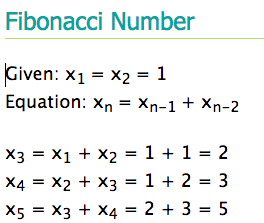

August 7, 2015
What is recursion?
As someone who is fond of math, the best way in which I can describe recursion is a sequence where the answer to the current problem depends on the answer from the previous problem. In other words, you are defining the problem in terms of itself. The loop can go on forever depending on the bounds. A popular example would be the Fibonacci Numbers: 
Why is coding recursion rare?
In most coding languages however, recursion seems to be less used as iteration is preferred. In order to understand why, I wanted to introduce the idea of stack. Stack is a collection of elements in which the 2 main operations are pushing a element in and popping an element off. A call stack stores the subroutines of a program. When a program starts, there is a chunk of memory that is assigned to the stack. When that memory runs out, the program crashes from stack overflow. The most common cause of stack overflow is recursion. Since recursion is about the function calls on itself, there are cases in which it calls on itself so many times that the space required to store the variables and information associated with each call is too much. But it does need to be noted that the good thing about recursion is that it usually makes the code shorter and easier to read.
JavaScript Example
Below is an example of recursion where a function is written for factorial, "!". The first part is defining that the factorial of 0 is 1. Other than that special case, the factorial of each number depends on the factorial of the integer prior. For example, 4! is actually (3! * 4).
function factorial(n) {
if (n === 0) {
return 1;
}
return n * factorial(n - 1);
}